Established
1992
Welcome to our school — nurturing learning, character and a bright future for every student.
Secondary education from Class 8th to Class 10th.
Mediums of learning: Odia and English.
Serving the educational needs of the community since 20 July 1992.
Former Headmaster
Mr. Abhiram Kamila served as the Headmaster of Karua Gadadhar Kar High School, Beldandia.
He retired from service on 31 May 2026 after his valuable service to the school.

Karua Gadadhar Kar High School was established in 1992 and is managed by the Department of Education. The school is located in a rural area at Karua Grampanchayat, Basta Block, Balasore District, Odisha.
The school consists of Grades 8 to 10 and is co-educational. It does not have an attached pre-primary section. The medium of instruction is Odia. The school is approachable by an all-weather road and the academic session begins in April.
The legendary person Late Kanhu Kishore Kar was the first donor to the school. Another local personality, Mr. Niranjan Patra from Palsahi village, has been a backbone of the school and has contributed greatly to its development.
The real hero of the school, Mr. Abhiram Kamila, spent his entire professional life working for the upliftment and development of the school. He later became the Headmaster and served the institution with dedication. He retired from service on 31 May 2026, handing over charge to Mr. Trilochan Panda, the 3rd TGT of the school. Mr. Trilochan Panda is now serving as the IC Headmaster and continues his efforts to make the school one of the best educational institutions in the Balasore district.
The school has a private building situated on approximately 60 decimals of land and has around 3 acres of its own land. It has 3 classrooms, one computer laboratory and one science laboratory for instructional purposes. All classrooms are in good condition. The school also has two additional rooms for non-teaching activities and a separate room for the Headmaster/teachers.
The school has had a hostel facility for its students from the very beginning, and the hostel facility is provided free of cost. The school has a boundary wall and electricity connection.
The school has functional drinking-water facilities, including tap water and machine water providing chilled, hot and normal water. There are 4 boys' toilets and 3 girls' toilets, all functional.
The school has a playground and a library with 1,352 books. It also has computers for teaching and learning purposes. Under the 5T programme of the Government of Odisha, the school has 5 computer-aided learning facilities.
Established in 1992 • Classes VIII to X
1992
VIII to X
21080323251
Mr Trilochan Panda
Beldandia, Basta, Balasore
756023
Supporting reading, learning and independent study.
Encouraging practical learning and scientific thinking.
Promoting fitness, teamwork and sportsmanship.
Capacity: 200 Students
Residential facility exclusively for boys.
Supporting a clean, healthy and comfortable environment.
Supporting teaching, learning and daily school activities.
Encouraging creativity, participation, confidence and talent.
Mr Trilochan Panda
Headmaster, KARUA GADADHAR KAR HIGH SCHOOL, BELDANDIA
📱 79785556137
📱 8658954488
📱 9777355189
📧 kgdkhsbeldandia1992@gmail.com
📧 kgkhs1992@gmail.com
KARUA GADADHAR KAR HIGH SCHOOL, BELDANDIA
Beldandia, Basta, Balasore, Odisha – 756023, India
Quality education from Class VIII to Class X
Building strong foundations and developing confident learners.
Strengthening subject knowledge, discipline and independent learning.
Supporting students as they prepare for their next academic journey.
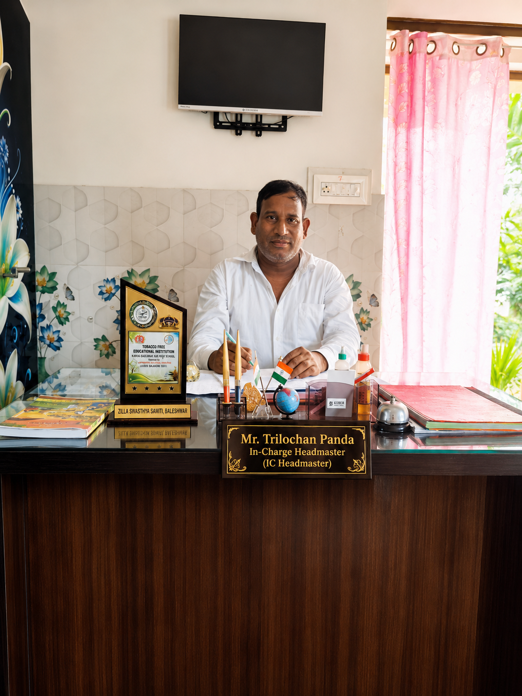
In-Charge Headmaster (IC Headmaster)
2nd TG – Arts
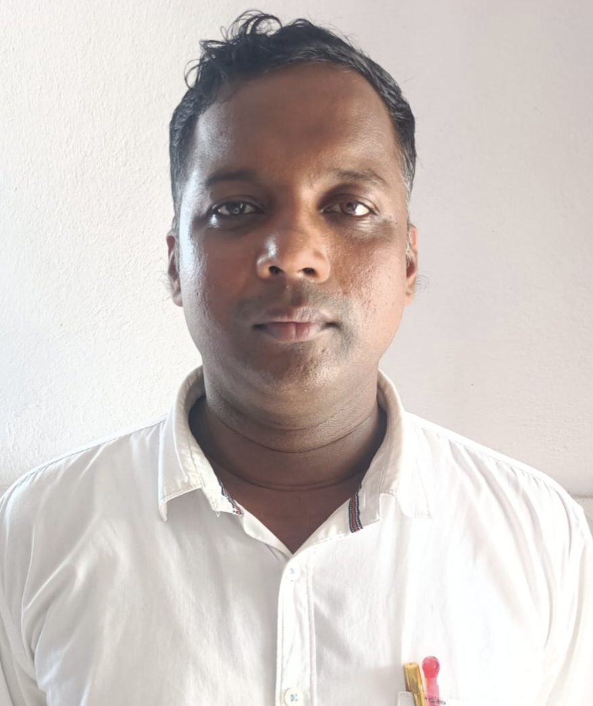
PCM
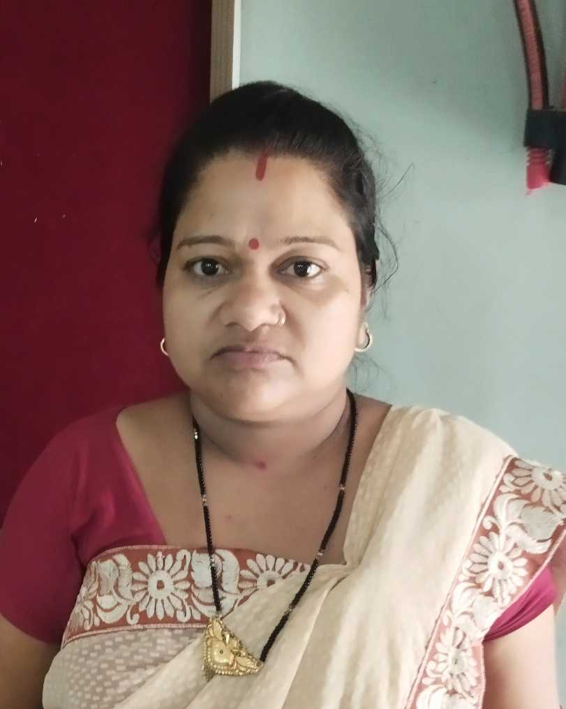
CBZ
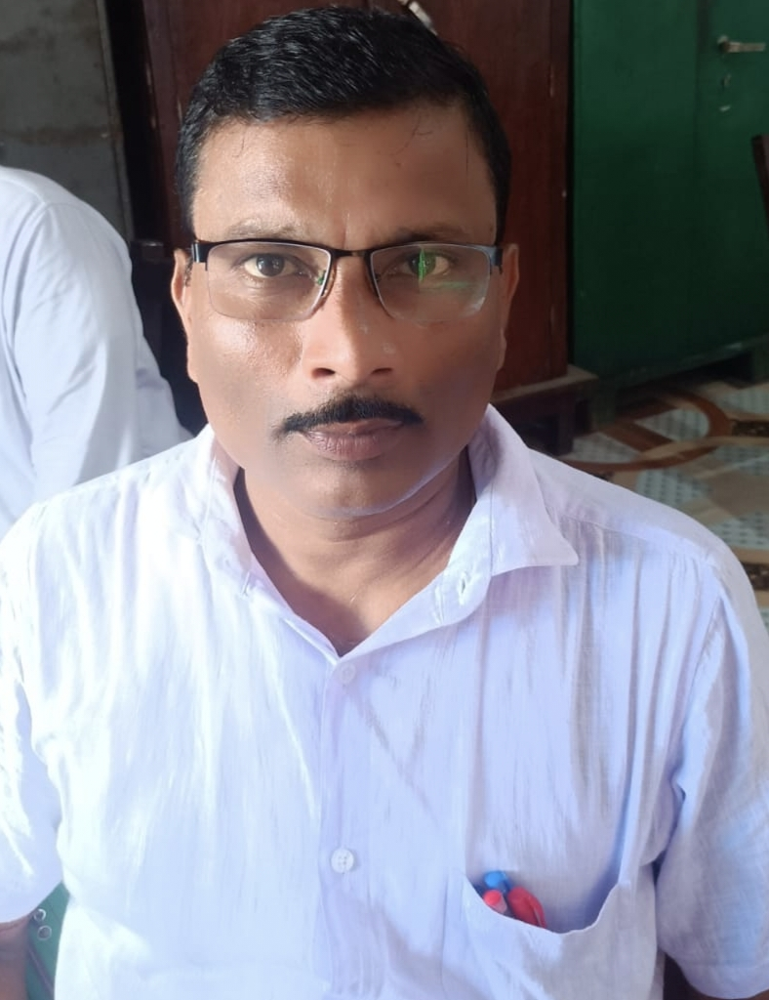
Hindi
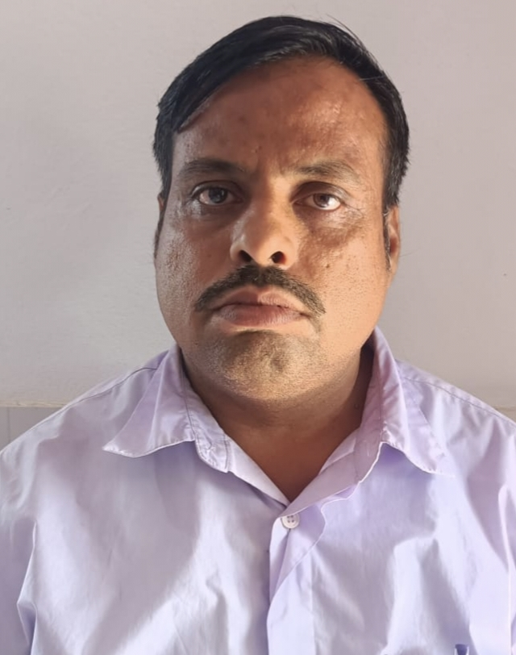
Classical
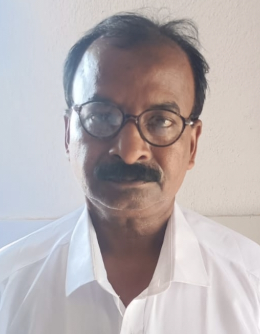
PET
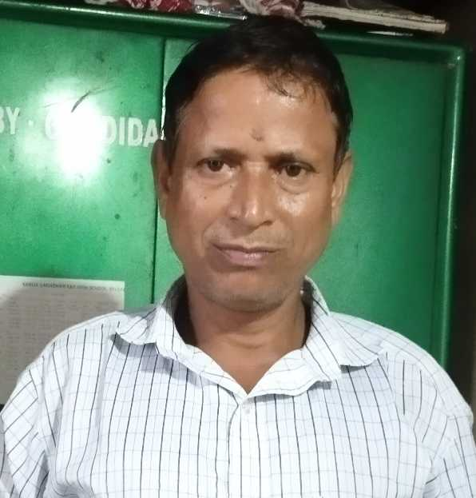
Jr. Clerk
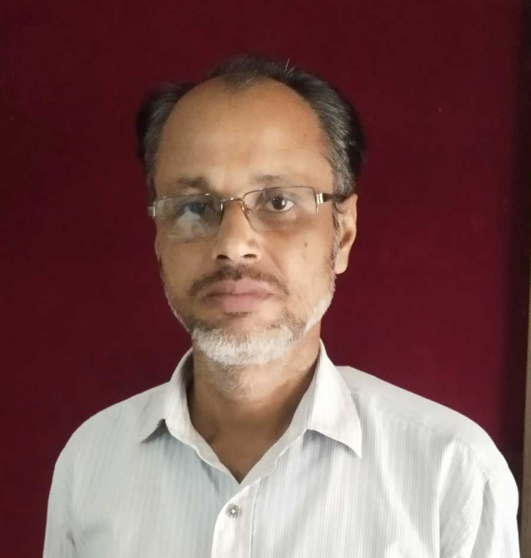
1st Peon
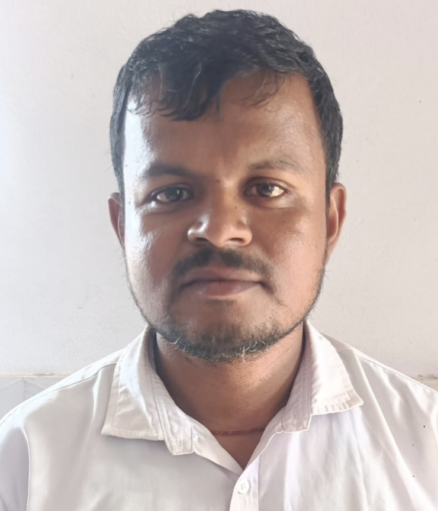
2nd Peon
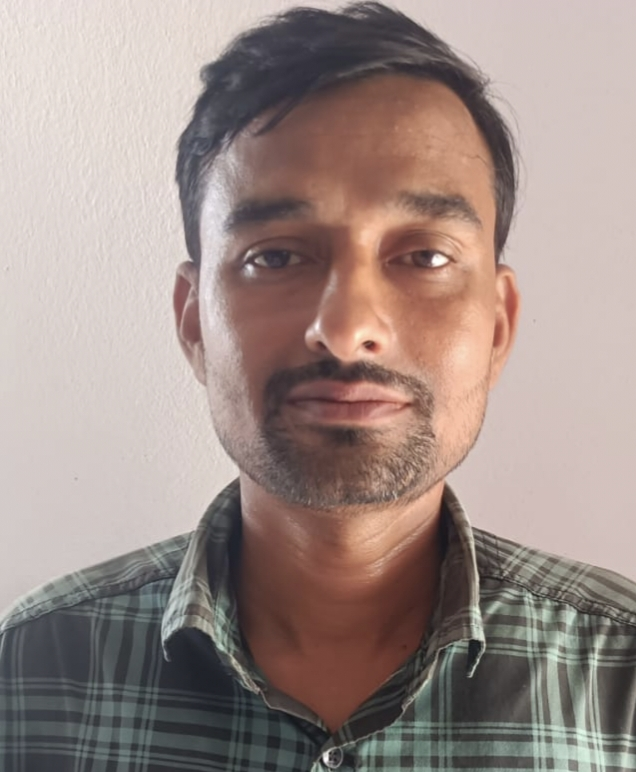
Watchman
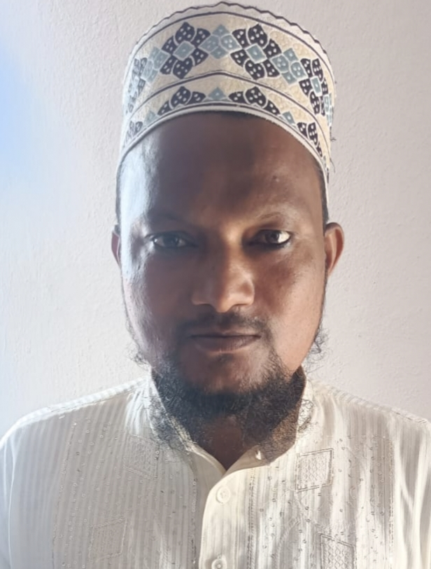
Urdu
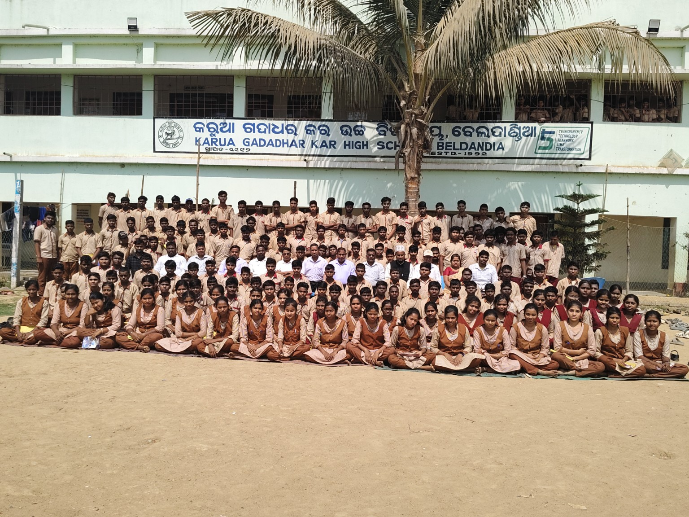
Important school notices, examination information, holidays, events and other announcements can be published here.
Headmaster: Trilochan Panda
Established: 20 July 1992
Classes: 8th to 10th
Medium: Odia, English
Email the School